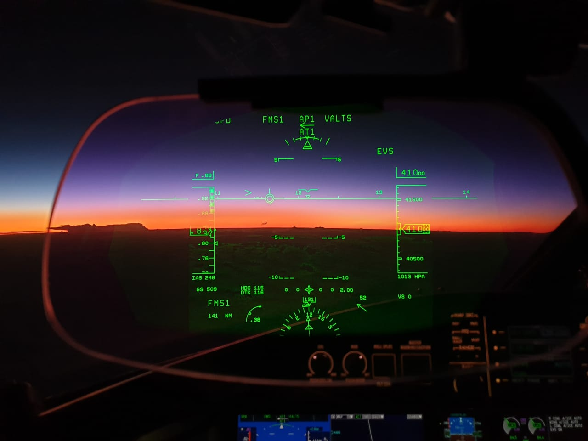
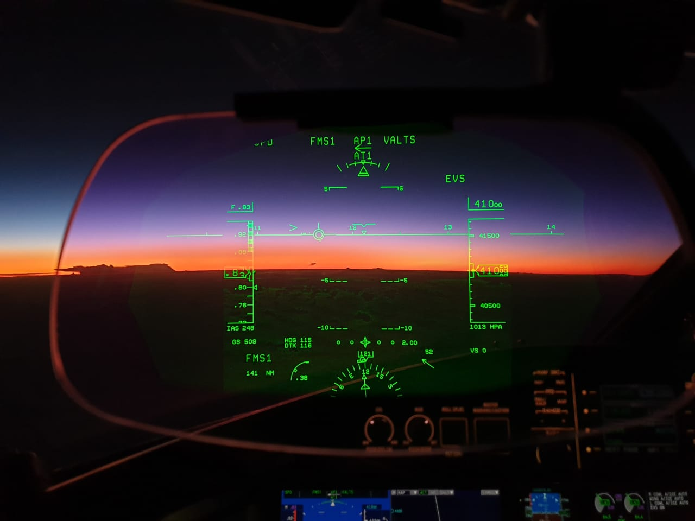

I'm Khalid.
a pro- Pilot & Instructor.


I'm a veteran IAF Pilot with over 10000 hours of flight experience on aircraft like Global Express, B-737 NG, Do-228 and AN-32 aircraft. My experience includes over 2000 hours of instructional flying on HPT-32, Do-228 and B-737 aircraft.
I learnt to fly on AN-32 aircraft in the IAF three decades back. For last ten years, I have been flying Global Express aircraft and have over 3000 hrs experience on this aircraft type. I flew B-737 in the IAF and in commerial airline for five years plus. My area of operation has been global with trans-atlantic flight experience.
I have a passion for aviation simulators. I share the joy of flying with non-aviators on my simulator at IGI Airport, New Delhi at T3 terminal internationl Departure. It is open 24x7 for all international passengers and working staff to sit in te pilot seat and fly as pilot. Visit our website www.aviator1903.com or click the link below to find more details.